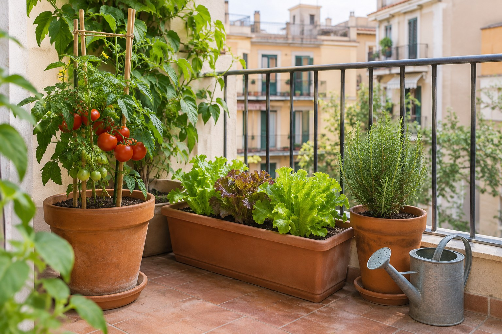

Sonido y descanso
Sonidos de lluvia y bosque
Lluvia sin truenos, bosque y agua para enmascarar ruidos y descansar.
Leer la guía
Un lugar para descubrir las plantas, cultivar un pequeño rincón verde y encontrar tiempo para una pausa. Historias, guías y experiencias para explorar a tu ritmo.
Una biblioteca en crecimiento, con fuentes para seguir aprendiendo.
Lluvia sin truenos, bosque y agua para enmascarar ruidos y descansar.
Leer la guía
8 especies emblemáticas: hábitat, firma acústica y estado UICN verificado.
Leer la guía
Conoce esta planta y las primeras decisiones para cuidarla.
Leer la guía
Horas de sol, sustrato aireado, humus de lombriz y errores a evitar en casa.
Leer la guía
Guía de meditación de 5 a 10 minutos para principiantes, sin anuncios.
Leer la guíaLas imágenes de paisaje son recreaciones visuales con IA del proyecto y no identifican las plantas descritas.